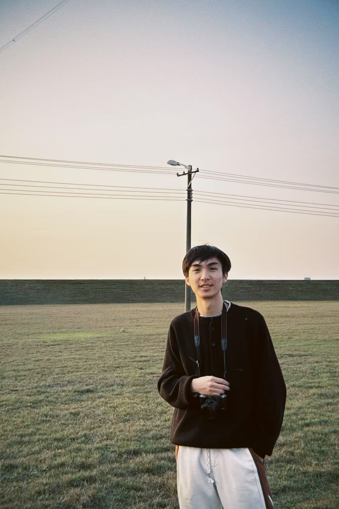

吕万朗
手机摄影爱好者
你好！欢迎来到我的个人主页。我热爱创造美观实用的网页，也喜欢用镜头记录生活中的美好瞬间。 在这里，你可以浏览我的摄影作品，了解我参与的项目，以及更多关于我的信息。
我的相册
这里展示了我近期拍摄的一些照片
山间日出
拍摄于2023年夏季

城市夜景
都市灯光与建筑

自然风光
大自然的宁静之美
提示：点击导航栏的选项可以切换不同内容区域
我的项目
以下是我最近完成或正在开发的一些项目
个人信息
了解更多关于我的背景、技能和经历
个人简介
喜欢探索新技术，不断尝试将创意转化为现实。
技能专长
HTML/CSS
JavaScript
UI/UX设计
摄影
Git
响应式设计
学习经历
- 2023年至今 - 自学前端开发，完成多个在线课程与实践项目
- 2022年 - 开始系统学习网页设计与开发基础知识
- 2021年 - 接触摄影，学习构图与后期处理技巧
联系方式
example@email.com
中国，北京